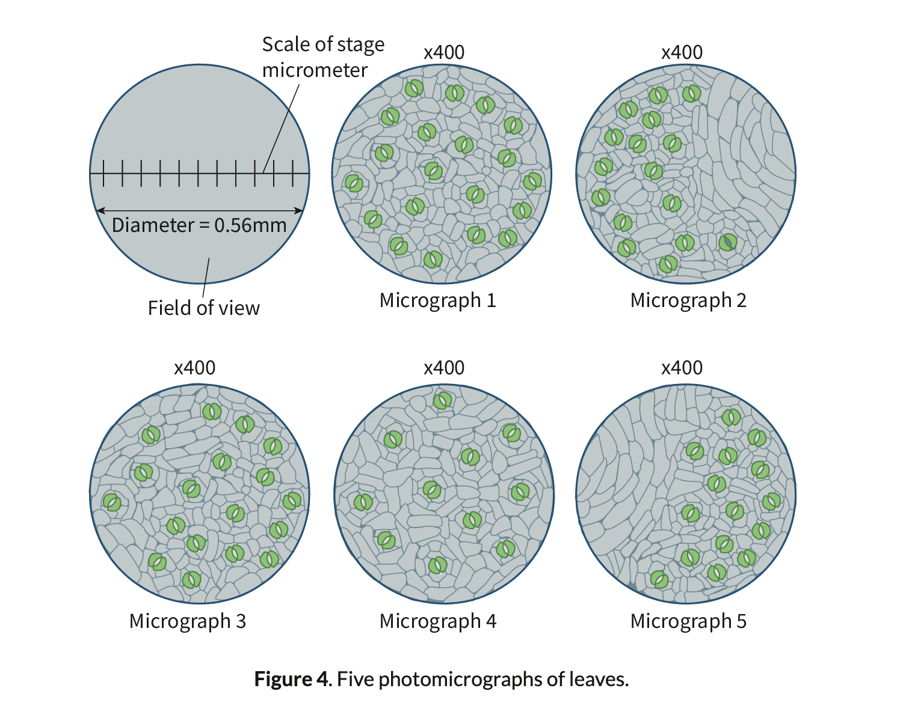

Stomata Density
Def: The number of stomata at a particular unit of area.
Use: Higher stomatic density means the higher rate transpiration.
Calculation of Stomata Density
1. Find the area of the field of view.
2. Calculate the number of stomata in each view.
Work Example

a. 0.28*0.28* π = 0.25 mm2 (area)
b. 20+16+18+11+15 / 5 = 16 (mean num of stomata by area)
c. 16 / 0.25 = 64.00 (answer)